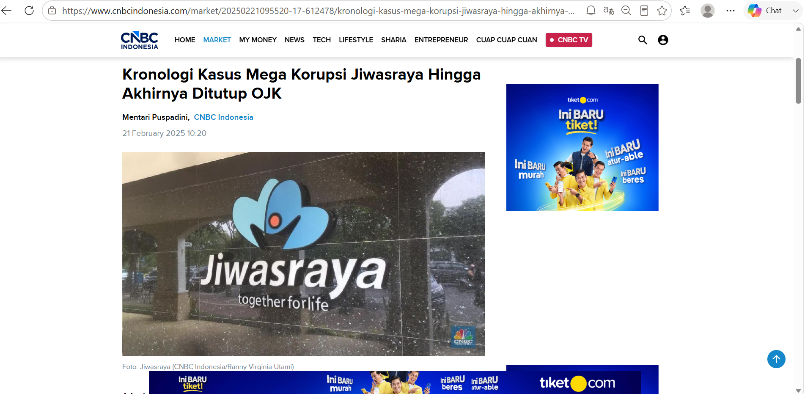
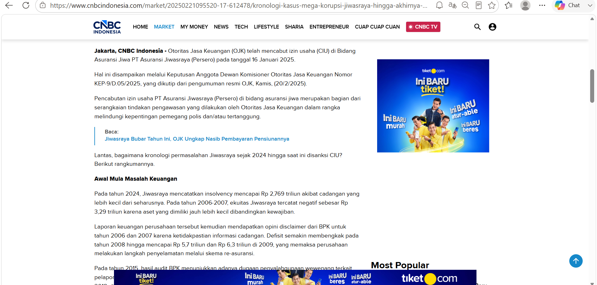

Studi kasus yang dipilih yaitu Kronologi Kasus Mega Korupsi Jiwasraya Hingga Akhirnya Ditutup OJK.


Sumber Berita : CNBC Indonesia (21 Februari 2025)
PT Asuransi Jiwasraya (Persero) merupakan perusahaan asuransi milik negara yang mengalami permasalahan keuangan akibat pengelolaan investasi yang tidak sehat serta praktik korupsi yang berlangsung selama bertahun-tahun. Akibatnya, perusahaan tidak mampu memenuhi kewajibannya kepada para pemegang polis sehingga terjadi gagal bayar. Setelah melalui proses hukum dan pengawasan yang panjang, OJK mencabut izin usaha Jiwasraya pada Januari 2025 sebagai langkah perlindungan terhadap pemegang polis dan penyelesaian perusahaan. Link berita : https://www.cnbcindonesia.com/market/20250221095520-17-612478/kronologi-kasus-mega-korupsi-jiwasraya-hingga-akhirnya-ditutup-ojk
Opini Saya (Bagaimana Semestinya):
Menurut saya, kasus Jiwasraya menunjukkan bahwa lembaga keuangan non perbankan harus mengutamakan prinsip amanah, transparansi, dan tata kelola perusahaan yang baik.
Dana yang dipercayakan masyarakat harus dikelola secara profesional dan tidak boleh ditempatkan pada investasi berisiko tinggi tanpa pengawasan yang memadai.
Dalam perspektif Islam, pengelolaan dana harus menghindari unsur penipuan (gharar), penyalahgunaan amanah, dan tindakan yang merugikan pihak lain. Selain itu, pengawasan dari OJK dan auditor harus dilakukan secara konsisten agar penyimpangan dapat dideteksi lebih awal.
Apabila prinsip kejujuran, akuntabilitas, dan kehati-hatian diterapkan dengan baik, kepercayaan masyarakat terhadap lembaga keuangan akan tetap terjaga dan kasus serupa dapat dicegah di masa depan.
Link Video Muamalah : https://youtu.be/xWqsJtkDuU0?si=84zOJM_MMkrlTCDy